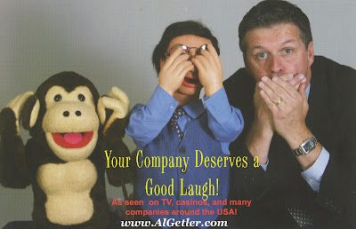

#46 Ventrilo-Card
2/27/2010
Al Getler
(Card #10, Set #4)
Al Getler became interested in ventriloquism at the age of eight, when he received a Danny O'Day figure for Christmas. He taught himself the art of ventriloquism with the help of Jimmy Nelson's records, and performed for the first time professionally when he was twelve. He was inspired to become a ventriloquist after watching other ventriloquists on TV in the late 1960s.
Al has performed for many fortune 500 companies, casinos, conventions, comedy clubs, schools and colleges. He has been featured on FOX-TV, CBS News and ABC-TV's "Good Morning America."
Al continues to perform his act for corporations and groups around the country. He was appointed to the Board of Advisors for Vent Haven Museum, and has served as chairman of the Ventriloquist Convention twice, once in 1990 and again in 1995. Copyright 1995 OO-LA-La, INK.
(Card #10, Set #4)
Al Getler became interested in ventriloquism at the age of eight, when he received a Danny O'Day figure for Christmas. He taught himself the art of ventriloquism with the help of Jimmy Nelson's records, and performed for the first time professionally when he was twelve. He was inspired to become a ventriloquist after watching other ventriloquists on TV in the late 1960s.
Al has performed for many fortune 500 companies, casinos, conventions, comedy clubs, schools and colleges. He has been featured on FOX-TV, CBS News and ABC-TV's "Good Morning America."
Al continues to perform his act for corporations and groups around the country. He was appointed to the Board of Advisors for Vent Haven Museum, and has served as chairman of the Ventriloquist Convention twice, once in 1990 and again in 1995. Copyright 1995 OO-LA-La, INK.

NOTE: The above giant postcard along with an Al Getler DVD will be awarded to some lucky person next week!